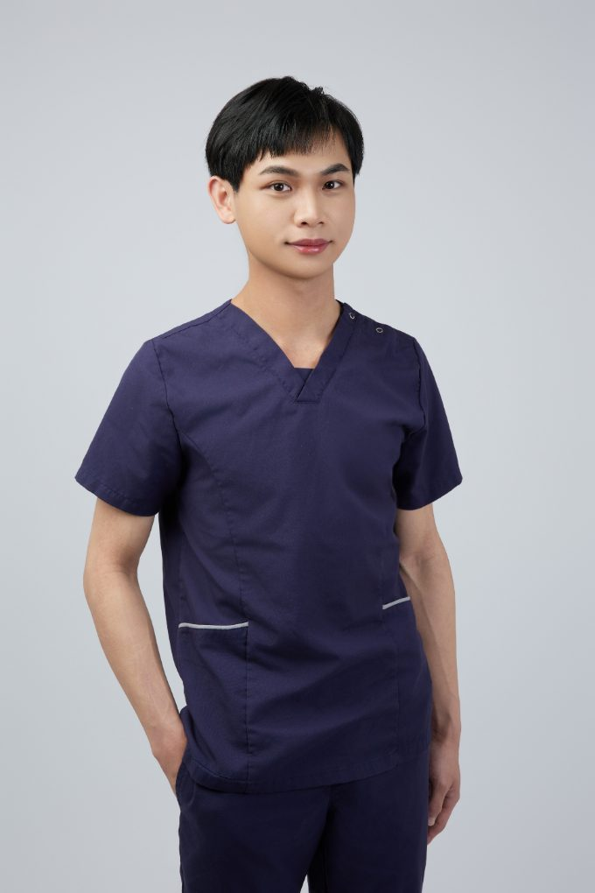

FIELDS・專業領域
四條路，走向同一個身體
從三鐵訓練後的修復，到紅繩上的深層穩定；從車架上的毫米調校，到一次五克的輕觸——徒手治療的方法不同，目的相同：讓身體回到它原本的樣子。
CONTACT・聯絡
身體有話想說？
讓我們先從一次評估開始。
不確定自己適合徒手、紅繩還是 Fitting？沒關係——初次評估會花時間聽你說、看你動，再一起決定方向。第一次接觸物理治療，可以先讀物理治療完整指南。